A. Severed
The name has three o’s. The second one, where lobo- (lobe) meets -tomy (cutting), is cut clean through and its top has slipped.
Recommended. It comes from the name, not from a screen layout that may change, it reads at 16 px, and the same cut marks “off” inside the app.
